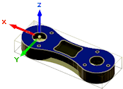

<div id="wcs_orientation_flipX"><p>Inverti X di 180 gradi.</p>

<table class="tipTable" cellspacing="10">
<tr>
<td><center></center></td>
<td><center></center></td>
</tr><tr>
<td><center><p><b>Fresatura X</b></p></center></td>
<td><center><p><b>Inverti X di 180 gradi</b></p></center></td>
</tr></table>

<table class="tipTable" cellspacing="10">
<tr>
<td><center></center></td>
<td><center></center></td>
</tr><tr>
<td><center><p><b>Tornitura X</b></p></center></td>
<td><center><p><b>Inverti X di 180 gradi</b></p></center></td>
</tr></table>
</div>